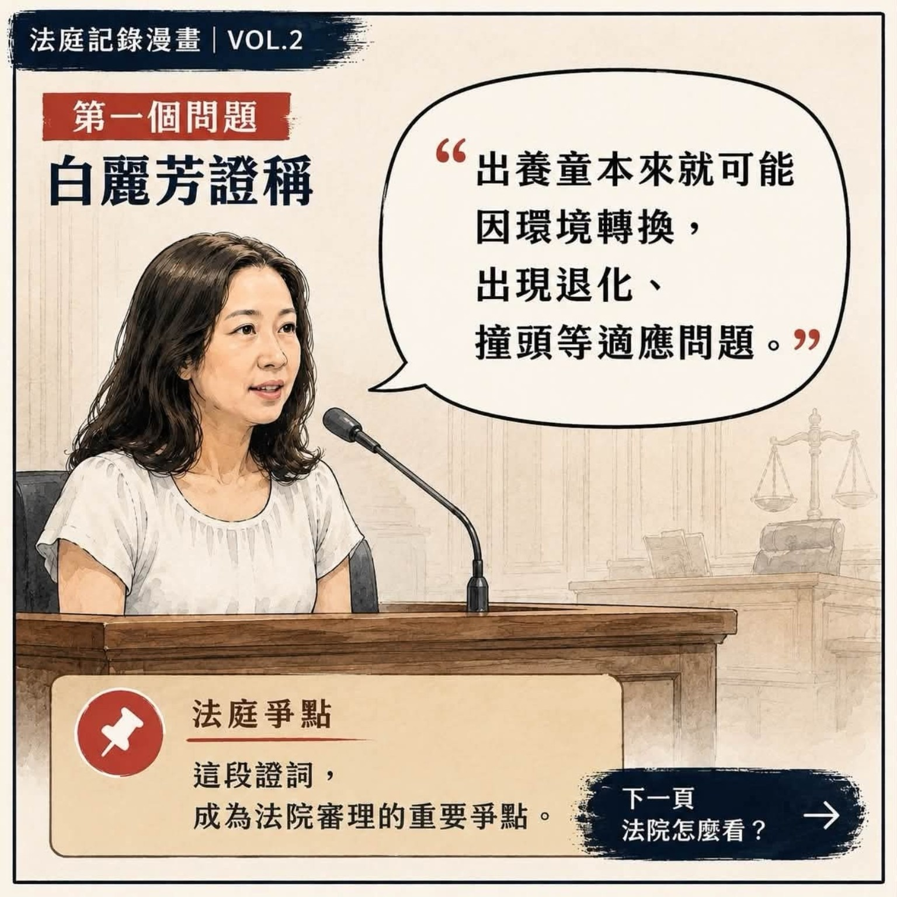
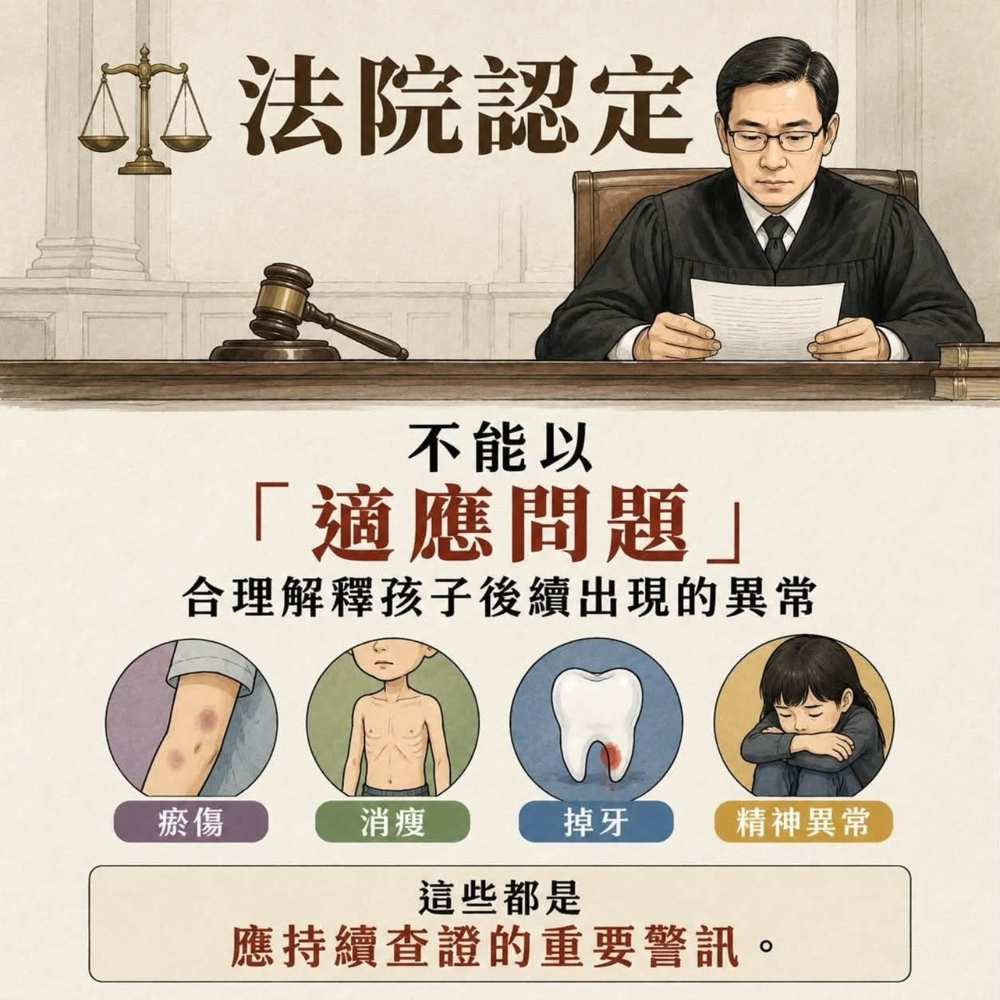
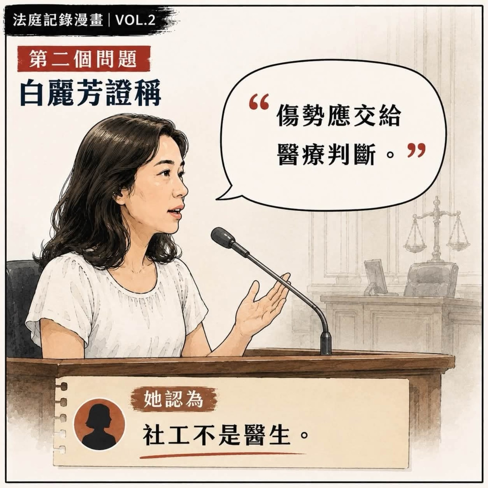
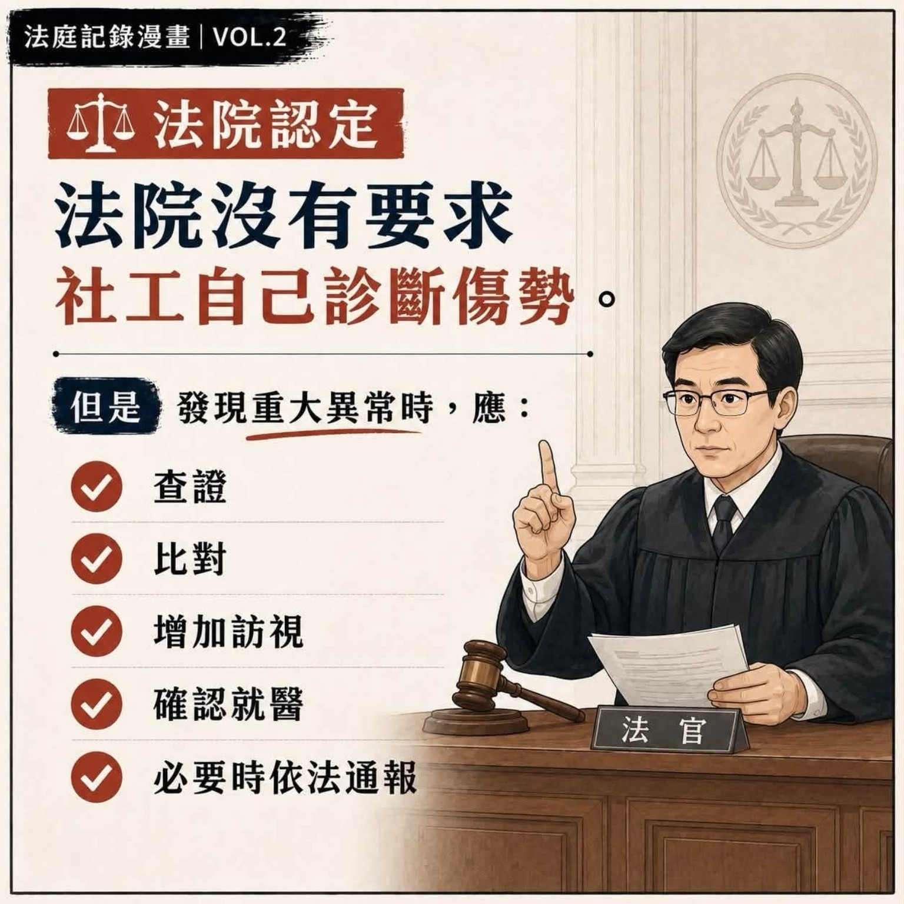
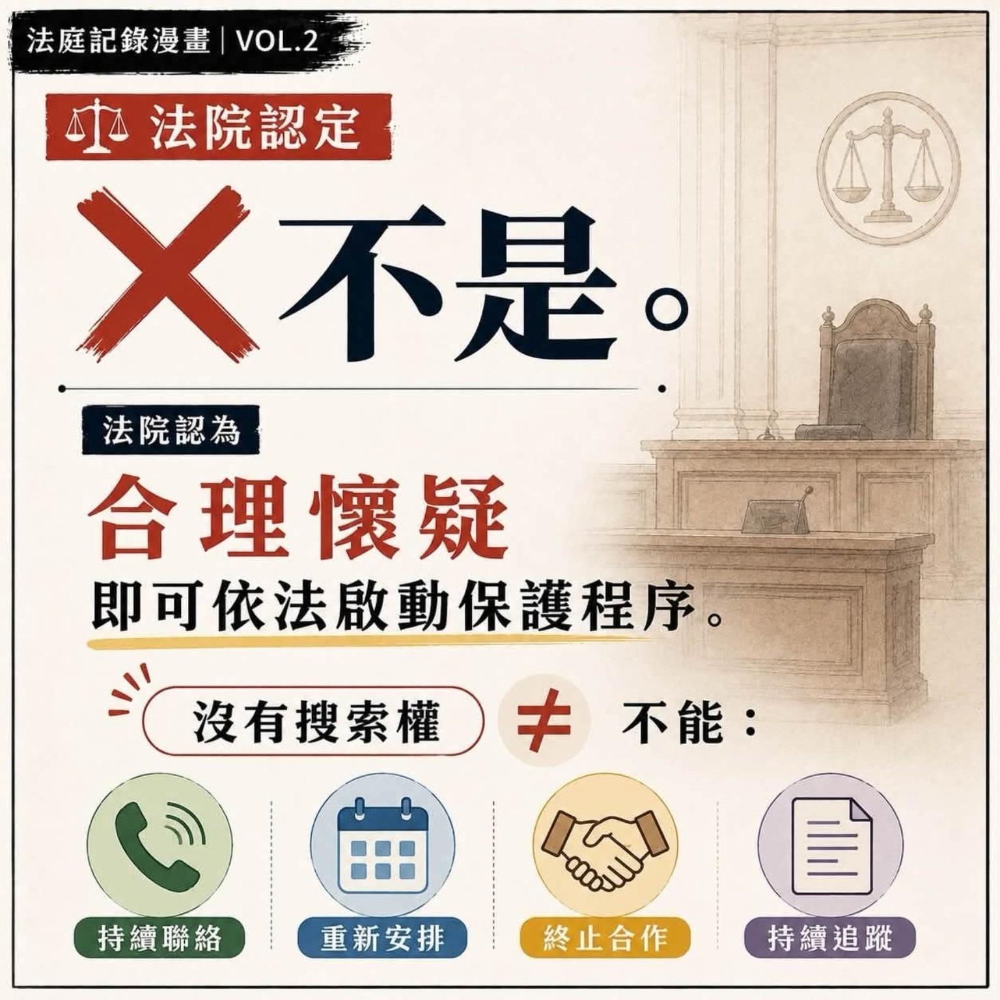
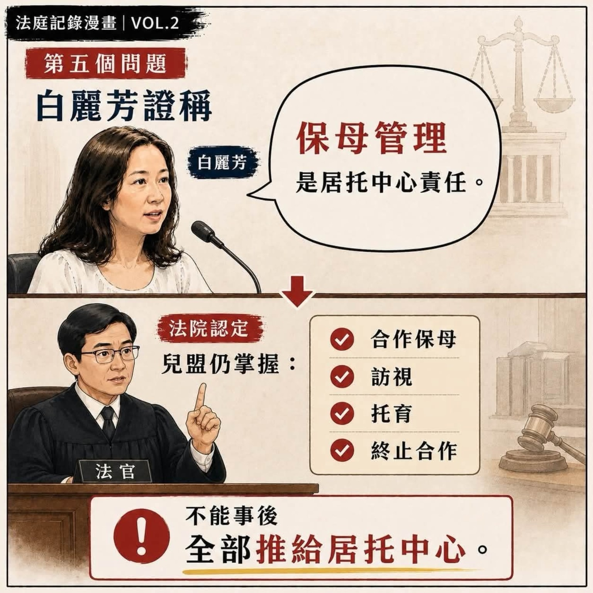
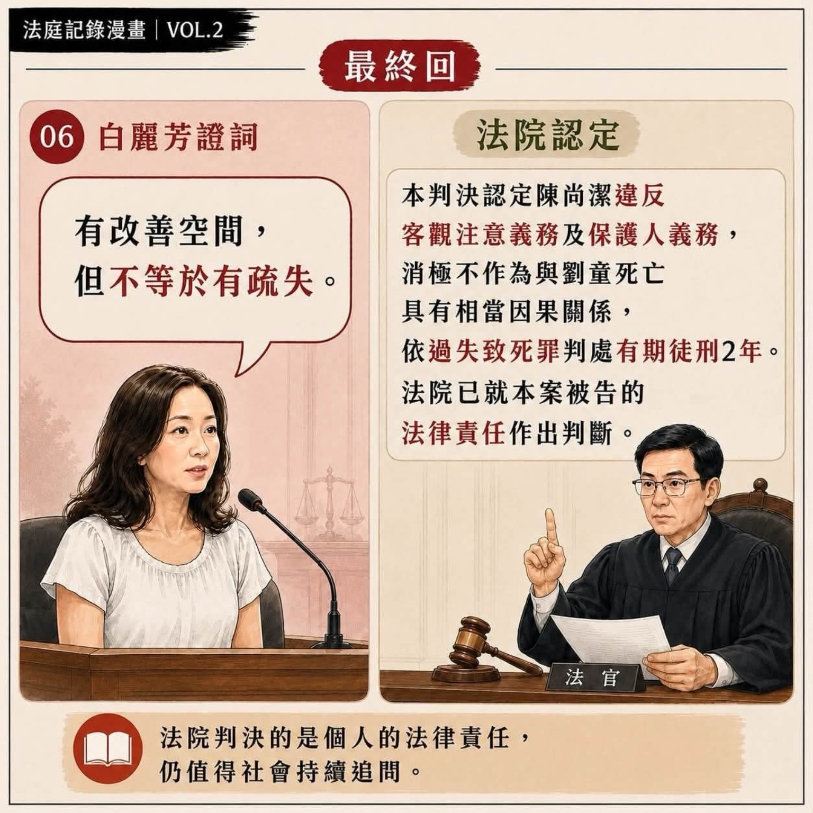

VOL.2P.1

法庭紀錄漫畫 VOL.2｜第 1 頁
依據公開庭審內容，以圖文整理白麗芳的重要證詞、法院對相關爭點的認定，以及兒少保護制度在實務執行上的核心問題。
感謝張先生提供兒福聯盟社工陳尚潔案一審開庭紀錄🙏
本篇依據公開庭審內容，以圖文方式整理白麗芳於法庭上的重要證詞，以及法院對相關爭點的認定，希望協助關心剴剴案的朋友，更清楚了解案件審理過程，也透過庭審內容，一起思考兒少保護工作在制度、文化與實務執行上，還有哪些值得檢視與反思之處。
庭審中呈現的，不只是個案責任，更反映出部分實務觀念與社會大眾對兒少保護的期待，可能存在一定的落差。第一線工作確實有許多限制與壓力，但當孩子已經出現異常警訊時，制度是否真正被落實、保護機制是否即時啟動，才是最重要的課題。
再完善的社會安全網，如果在執行過程中因為習慣、思維、風氣導致消極作為，而沒有確實落實應有的查證與啟動機制，再好的制度也可能失去原本應有的功能。
希望透過公開庭審內容的整理，讓更多人了解案件，也一起思考，如何讓兒少保護制度不只是存在，而是真正的落實。
漫畫圖片已直接完整嵌入網頁，可直接向下逐頁閱讀。
P.1

P.2
P.3
P.4
P.5 P.6
P.7
P.8
P.9